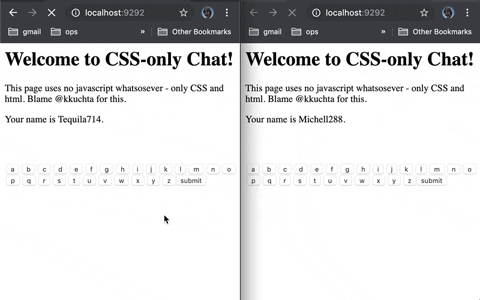

Websockets for Non-netflix devs
Catherine Holloway
Netflix - Zuul
https://www.youtube.com/watch?v=6w6E_B55p0E1996 iframes
1999 IXMLHTTPRequest via ActiveX
1999 http 1.1 - transfer chunked
2002 Oddpost
2004 Gmail
2005 AJAX
2006 Comet (long-polling http)
2011 WebSocket standardized
github.com/kkuchta/css-only-chat
3 Ways to use Websockets + Vue
Directly
mounted: function () {
var app_handle = this;
const socket = new WebSocket('ws://localhost:8080');
// Connection opened
socket.addEventListener('open', function (event) {
socket.send('Hello Server!');
});
// Listen for messages
socket.addEventListener('message', function (event) {
app_handle.data = event.data;
});
vue-native-websockets
import VueNativeSock from 'vue-native-websocket'
Vue.use(VueNativeSock, 'ws://localhost:8080')
var vm = new Vue({
mounted: function () {
var app_handle = this;
this.$socket.addEventListener('open', function (event) {
socket.send('Hello Server!');
});
this.$socket.addEventListener('message', function (event) {
app_handle.data = event.data;
});
})
vue-native-websockets vuex
Vue.use(VueNativeSock, 'ws://localhost:9090', {
passToStoreHandler: function (eventName, event, next) {
event.data = event.should_have_been_named_data
next(eventName, event)
}
})
vue + socket.io
Vue-Socket.io - 3380
vue-websocket - 436
What to expect when you're expecting a TCP packet
WebSockets
HTTP


WebSocket - bidirectional TCP
EventSource - persistent HTTP with text/event-stream